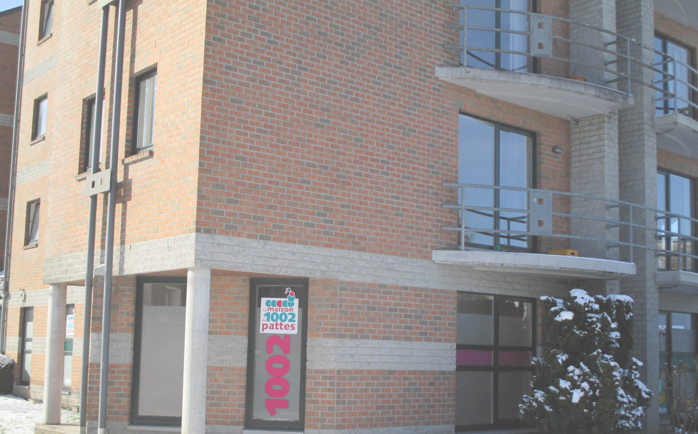
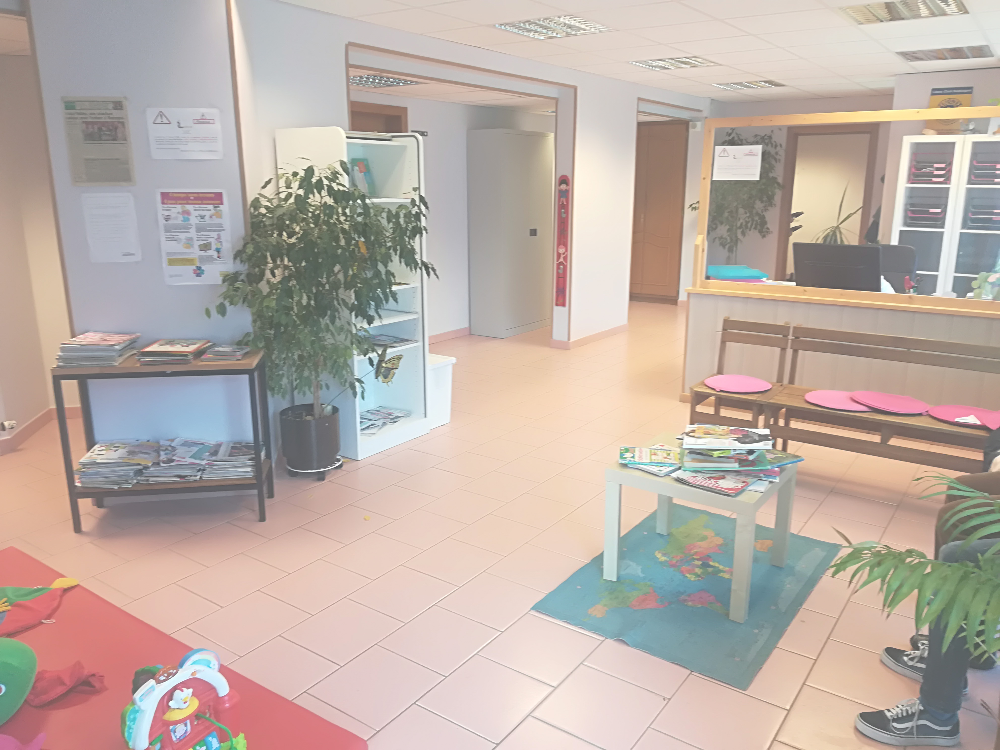

Devant cette réalité de plus en plus imposante, c’est en avril 2013 que nous avons créé une ASBL - la Maison du 1002 Pattes – Elle a pour objectif de recevoir des enfants, des adolescents et des familles en difficultés : relationnelles, émotionnelles, d’apprentissage scolaire, pédopsychiatriques… y compris les situations où un enfant est porteur d’un handicap d’ordre mental ou physique. Notre but est de clarifier les difficultés de l’enfant, du jeune ou de la famille, tant d’un point de vue médical que paramédical. Pour ce, nous réalisons des bilans multidisciplinaires qui permettent des diagnostics affinés pour mieux cibler les difficultés réelles et dégager des prises en charge plus efficaces dans le temps.
Nous travaillons avec le réseau de santé mentale de la province, avec les écoles, les PMS, les médecins généralistes et spécialistes, l’AVIQ, les structures de Service d’Aide à la Jeunesse, les maisons d’accueil pour enfants, les services résidentiels pour jeunes… En créant cette structure, nous nous sommes inscrits comme étant la seule, de ce type, en province du Luxembourg. De plus, dans cette ASBL, médecins et paramédicaux se mettent autour de la table, une après-midi par semaine (bénévolement), pour discuter des nouvelles demandes et échanger de l’évolution et/ou de la prise en charge de tous ces enfants, adolescents ou familles en « détresse psychologique».
Depuis avril 2013, c’est environ 1400 enfants et leur famille qui ont été reçus en consultation par un ou plusieurs de nos 9 thérapeutes actuels. Cette évolution est croissante. Parmi ces situations, environ 23% proviennent de la Commune de Bastogne et 30% ont un dossier AWIPH : via des retards de développement d’ordre moteur – intellectuel – relationnel – praxique. Chaque année, nous clôturons la prise en charge d’environ 60% des demandes de consultations. Nous en réorientons environ 7%. Depuis avril 2013, 17% sont en suivis thérapeutiques continus. Nous avons terminé l’année 2017 avec environ 50 situations en attente d’un premier rendez-vous… La plupart des enfants que nous recevons sont âgés entre 2 et 16 ans. Mais nous travaillons aussi avec des bébés (le plus petit a 14 mois), des grands adolescents (17 – 18 ans) et des adultes (>18 ans).
Notre asbl existe grâce aux thérapeutes, neuropsychiatres, psychologues, logopèdes qui font de leurs métiers une vraie vocation.
Notre équipe